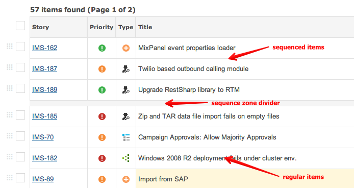
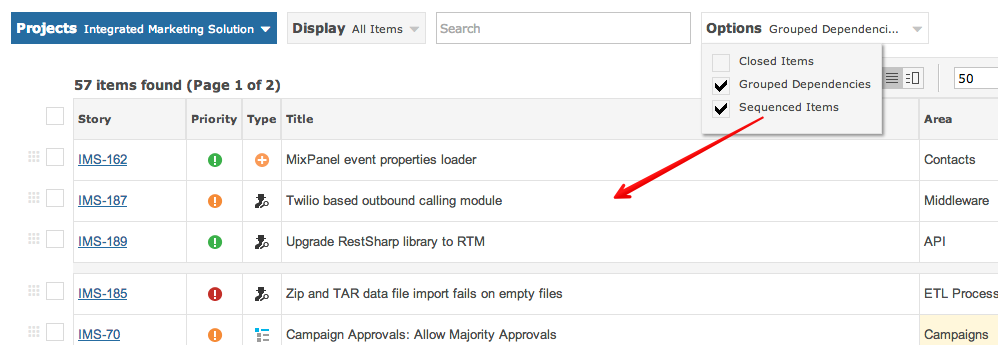
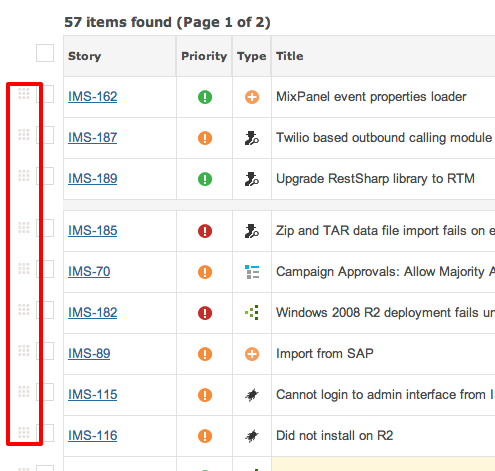

The grid can be split horizontally to allow two sets of items to be displayed:

The sequenced zone can be enabled through the filter options to the left of the grid.

To sequence or de-sequence an item, simply use the item's drag handle and move it up or down.

Note The sequenced zone does not apply to the 'all projects' view